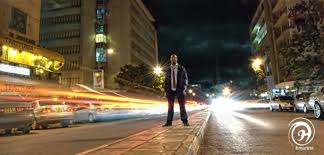
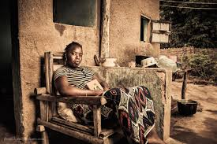
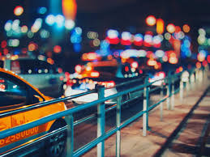
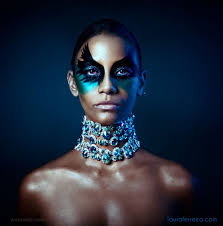

class="important"
Photography
There are various kinds of photography. The following are just but a few;
Portrait photography
Street photography
 
Bokeh photography

Fashion photography

Click here to view my portfolio website